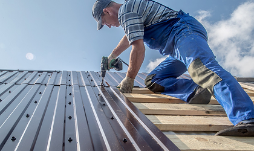
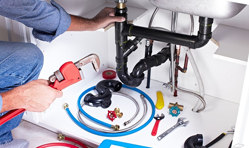
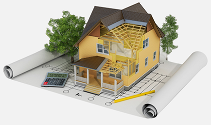

Корисні статті про ремонт

Хочете дізнатися більше про покрівельні роботи?
Покрівельні роботи виконуються з метою забезпечення захисту будівлі від атмосферних опадів, запобігання проникненню вологи і витоків, а також для підтримки міцності і довговічності покрівлі.

Хочете дізнатися більше про сантехнічні роботи?
Метою сантехнічних робіт є забезпечення надійної та безпечної роботи систем водопостачання та опалення, а також ефективного видалення стічних вод та відходів.

Хочете дізнатися більше про ремонт?
Процес відновлення, виправлення або оновлення чогось, включаючи будівлі, приміщення, обладнання або предмети побутового використання. Ремонт може включати в себе різні види дій